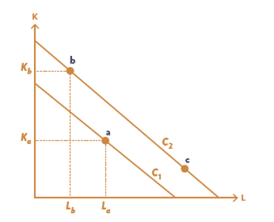
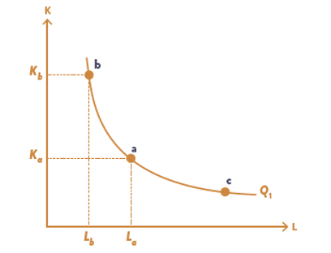

Kapittel 5 - Produksjonsteori#
Notatblokken lastes enklest ned på uit-sok-1303-v26/uit-sok-1303.v26.github.io
Vi forutsetter følgende om bedriftene som vi analyserer:
Bedriften produserer ett homogent produkt
Produksjonen kan måles
Bedriften bruker to produksjonsfaktorer (arbeidskraft og kapital)
Produksjonsfaktorer er homogene, målbare, og har faste gitte priser
Forholdet mellom innsatsfaktorer og ferdigprodukt representeres med en produktfunksjon
Produsenten tar produktprisen for gitt
Produsentens mål er å maksimere fortjeneste
1. Isokost#
Kostnadsfunksjonen#
En bedrift bruker to innsatsfaktorer, Arbeidskraft \(L\) og Kapital \(K\) Innsatsfaktorene har priser \(w\) lønn per arbeider, \(L\) er antall arbeidere. Kostander for arbeid blir da \(wL\). Kapitalkostnadene er prisen på kapital \((r)\) ganget med antall enheter kapital \((K)\)
Kostandfunksjon for produksjon med to produksjonsfaktorer er:
Isokostlinje#
En isokostlinje viser ulike kombinasjoner av arbeidskraft og kapital som mulig å oppnå for en gitt kostnad. For å tegne isokostlinjen kan vi endre kostandfunksjonen slik at den står med:
For å finne helningen til isokostlinjen deriverer vi mhp \(L\)

Figuren viser faktorkombinasjoner og isokostlinjer.
# importer pakkene som vi trenger
import numpy as np
from matplotlib import pyplot as plt
import sympy as sp
Vi definerer \(L\), \(K\), \(C\), \(w\) og \(r\) som symboler, og definerer ligning 1.
# Definer symboler
L, K, C, w, r = sp.symbols('L K C w r', positive=True)
isokost = sp.Eq(C, w*L + r*K)
display(isokost)
Løser for K for å få ligning 2
K_losning = sp.solve(isokost, K)[0]
K_losning.expand()
Finner helningen på isokostlinjen ved å derivere med hensyn på L
# Helningen til isokostlinjen for å tegne figur, derivert med hensyn på L
L_derivert = sp.diff(K_losning, L)
L_derivert
For å etterligne figuren i boken setter vi \(w = 1\) og \(r = 1\) og tegner isokostlinjer for to kostnadsnivå.
For å sette inn punktene a, b og c så setter vi også inn noen faktorkombinasjoner \((L, K)\) som prikker på linjene.
L_verdier = np.linspace(0.0001, 4, 100)
kostnad3 = isokost.rhs.subs([(L, 1.5), (K, 1.5), (w, 1), (r, 1)])
kostnad4 = isokost.rhs.subs([(L, 2), (K, 2), (w, 1), (r, 1)])
helning1 = L_derivert.subs([(w, 1), (r, 1)])
fig, ax = plt.subplots()
# Ikke kopier kode, bare ment for visualisering
ax.plot(L_verdier, kostnad3 + helning1*L_verdier, label='Isokostlinje', color='darkorange')
ax.plot(L_verdier, kostnad4 + helning1*L_verdier, label='Isokostlinje', color='darkorange')
# Alt under her er bare for å plassere punkter og annotasjoner på figuren for å etterligne det som er i boken, og er ikke ment for å være generell kode for å tegne isokostlinjer eller isokvanter
ax.plot(1.5,1.5, marker='o', color='darkorange', label='a')
ax.hlines(1.5, 0, 1.5, colors='darkorange', linestyles='dashed')
ax.vlines(1.5, 0, 1.5, colors='darkorange', linestyles='dashed')
ax.plot(0.5, 3.5, marker='o', color='darkorange', label='b')
ax.hlines(3.5, 0, 0.5, colors='darkorange', linestyles='dashed')
ax.vlines(0.5, 0, 3.5, colors='darkorange', linestyles='dashed')
ax.plot(3, 1, marker='o', color='darkorange', label='c')
ax.annotate('a', (1.5, 1.5), xytext=(1.5, 1.6), fontsize=12)
ax.annotate('b', (0.5, 3.5), xytext=(0.5, 3.6), fontsize=12)
ax.annotate('c', (3, 1), xytext=(3, 1.1), fontsize=12)
ax.annotate('$C_1$', (2.5, 0.5), fontsize=12, color='darkorange')
ax.annotate('$C_2$', (2.5, 1.5), fontsize=12, color='darkorange')
ax.text(0, 1.5, '$K_a$', va='center', ha='right', fontsize=12, color='darkorange')
ax.text(0, 3.5, '$K_b$', va='center', ha='right', fontsize=12, color='darkorange')
ax.text(1.5, 0, '$L_a$', va='top', ha='center', fontsize=12, color='darkorange')
ax.text(0.5, 0, '$L_b$', va='top', ha='center', fontsize=12, color='darkorange')
ax.set_xticks([])
ax.set_yticks([])
ax.set_xlim(0, 4)
ax.set_ylim(0, 4);
2. Produktfunksjon og isokvant#
Generelt kan vi skrive at kvantum produsert (Q) er en funksjon av alle produksjonsfaktorer brukt i prosessen. Bruker bedriften arbeidskraft (L) og kapital (K) vil produktfunksjonen være
Produktfunksjonen viser sammenhengen mellom tre variabler (enheter ferdigprodukt, kapital og arbeidskraft). For å kunne tegne denne funksjonen i to dimensjoner må vi fastsette en verdi for én av variablene. Vi setter en fast verdi \(Q_1\) på produksjon og skriver
Likning (3) viser kombinasjoner av K og L som kan brukes for å produsere nøyaktig \(Q_1\) enheter ferdig produkt. Dette er med andre ord en isokvant, som vises i figuren

Figuren viser isokvanter for produksjon av kvantum \(Q_1, Q_2, Q_3\). Kombinasjoner av K og L langs isokvanten for \(Q_3\) gir høyere produksjon enn kombinasjoner langs isokvanten for \(Q_2\), og \(Q_3\) gir høyest produksjon for bedriften.
På lang sikt kan bedriften variere begge (alle) produksjonsfaktorer. For å si noe om helningen på isokvanten kan vi beregne grenseproduktiviteten til begge faktorene:
Grenseproduktet sier noe om hvor mye produksjonen øker med når vi får en liten økning i en av produksjonsfaktorene. Vi ser at dette er et positivt tall, ettersom bedriften må produsere på en teknisk effektiv måte, dvs de vil ikke bruke mer innsatsfaktorer enn nødvendig.
Vi antar at det er avtakende grenseprodukt med hensyn på hver av produksjonsfatorene. Det betyr at etter hvert som man øker innsatsen av en faktor, mens den andre ligger fast, så vil grenseproduktet gå ned. Som i uttrykket”Jo flere kokker jo mer søl”. Dette kalles for “loven om avtakene grenseprodukt”.
Helningen på en isokvanten kan utledes ved å bruke regelen for implisitt derivasjon. Langs en isokvant er kvantum uendret og lik \(Q_1\). Med produktfunksjon \(Q(K,L)=Q_1\) får vi følgene uttrykket for helningen på isokvanten:
Helningen på isokvanten kalles for “Den marginale tekniske subsitusjonsrate (MRTS)”, og viser hvor mye mindre kapital man trenger dersom man øker innsatsen av arbeidakraft med en enhet, uten at produskjoen endres. Fra (4) vet vi at:
Og da kan MRTS uttrykkes som:
Et eksempel#
En bedrift bruker følgende produktfunksjon til å lage et gode
hvor \(Q\) er enheter ferdigprodukt, \(L\) er enheter arbeidskraft (målt i timer), \(K\) er enheter kapital og \(1> a>0\) er et konstant tall.
Vi skal beregne grenseproduktivitetene og MRTS for denne funksjonen; se matteboks 5.1.
# definer nye symboler
alpha, Q = sp.symbols('alpha Q', positive=True, real=True)
# definer ny produksjonsfunksjon (Cobb-Douglas)
cobb_doug = sp.Eq(Q, K**alpha* L**(1-alpha))
cobb_doug
Deriverer for K for å få grenseproduktivitet til kaptial (K)
MP_K=sp.diff(cobb_doug.rhs,K) #.rhs betyr at vi tar den høyre siden av likningen, altså K**alpha* L**(1-alpha)
sp.simplify(MP_K) #sp.simplify for å holde uttrykket likt Matteboks 5.1 "Grenseproduktet til kapital"
Deriverer for L for å få grenseproduktivitet til arbeidskraft (L)
# grenseproduktivitet til arbeid (L)
MP_L=sp.diff(cobb_doug.rhs,L) #.rhs betyr at vi tar den høyre siden av likningen, altså K**alpha* L**(1-alpha)
sp.simplify(MP_L) #sp.simplify for å holde uttrykket likt Matteboks 5.1 "Grenseproduktet til arbeid"
Beregner den marginale tekniske substitusjonsraten
MRTS=MP_L/MP_K
sp.simplify(MRTS)
# For å tegne isokvanter, løser vi for K
K_losning_isokvant = sp.solve(cobb_doug, K)[0]
K_losning_isokvant
Siden vi har at \(\alpha = 0.5\) så kan vi skrive om isokvanten enklere:
# Definerer funksjon for å tegne isokvant på figurer
# dette er samme utrykket som ovenfor
def isokvant(L,Q):
return Q**2/L
isokvant(L,Q)
For eksempelet i boken setter vi inn 0.5 for \(\alpha\)
MRTS.subs({alpha:sp.Rational(1,2)}) #Her er python teit og krever at vi spesifiserer at alpha er rationelt og nøyaktig 1/2, for at det skal kunne forenkle uttrykket
3. Kostnadsminimering#
På lang sikt kan bedriften velge hvor mye av hver faktor som skal ansettes. Dette, sammen med evt. faste kostnader, vil bestemme produksjonskostnaden. Hvordan velger bedrifter faktorinnsatsen? Det er naturlig å tenke at bedriften vil maksimere sin fortjeneste (dette er ikke eneste mulighet, men et nauturlig utgangspunkt for mange produsenter). Gitt at bedriften tar alle priser for gitt vil en produsert mengde \(Q\) gi en inntekt på \(PQ\) NOK. Å maksimere fortjeneste er da det samme som å minimere kostnaden for å prodsuere denne mengden. Gitt at bedriften tar priser i faktormarkedet for gitt vil det koste \(wL\) å ansette \(L\) enheter med arbeidskraft, \(rK\) å ansette \(K\) enheter med kapital. Summen av disse utgiftene er det som bedriften vil minimere ved optimale valg av innsatsfaktorer. Vi kan se bort fra faste kostnader i beregningen.
Minimeringsproblemet til bedriften er da
hvor \(Q_1\) er mengden som bedriften ønsker å produsere. Tenk at vi har kun to faktorer, arbeidskraft og kapital, og bedriften bruker følgende teknologi: \(Q=f(K,L)\). Da kan vi skrive kostnadsminimeringsproblemet som:
Subskriften ved siden av “min” viser hvilke variabler det er vi skal velge (dvs de endogene variablene), og “ubb” betyr “under bibetingelse”. Vi løses denne ved hjelp av Lagrange metoden.
Vi setter opp Lagrange funksjonen:
hvor \(\lambda\) er en Lagrange multiplikator som viser verdien av å gjøre bibetingelsen mindre streng. I dette tilfellet viser det økningen i kostnaden dersom vi øke produskjonen med én enhet. Vi deriverer \(L\) med hensyn på \(L,K,\lambda\):
Legg merke til at (10) innebærer at løsningen som vi finner må tilfredsstille bibetingelsen. Vi kan skrive om (8) og (9):
Deler vi (11) på (12) får vi
Tolkningen av (13) er at den relative prisen på arbeidskraft er lik den marginale tekninske substitusjonsbrøken.
Oppskrift for kostnadsminimering#
Vi ser på en bedrift som bruker arbeidskraft og kapital til å produsere et gode gjennom bruk av følgende teknologi: \(Q=Q(K,L).\) Da kan vi skrive kostnadsminimeringsproblemet som:
Vi har to ting må være oppfylt for å finne verdier på \(L,K\) som gir et kostnadsminimum:
Vi fortsetter på eksempelet med Cobb-Douglas funksjonen hvor \(Q(K,L)=L^aK^{1-a}.\) Se matteboks 5.2
Betingelsen for optimal faktorforbruk er at MRTS = w/r, hvor w er lønnssatsen og r er leiesatsen for kapital.
MRTS_eq = sp.Eq(MRTS, w/r)
sp.simplify(MRTS_eq)
Løser for kapital
K_losning = sp.solve(MRTS_eq, K)[0]
K_losning
Substituerer optimal_K inn i produksjonsfunksjonen for å finne optimal produksjon i steg 3 i matteboks 5.2
optimal_Q = cobb_doug.subs(K, K_losning)
sp.simplify(optimal_Q)
Vi finner så ut hva optimal bruk av arbeidskraft er
optimal_L = sp.solve(optimal_Q, L)[0]
optimal_L
\(\displaystyle Q \left(\frac{1}{\alpha w}\right)^{\alpha} \left(- \frac{1}{r \left(\alpha - 1\right)}\right)^{- \alpha}\) Er det samme som \(\displaystyle Q\frac{(1-\alpha) r}{\alpha w}^\alpha\)
Substituerer optimal arbeidskraft inn for å finne optimal innsats av kapital
# python klarer ikke forenkle utrykket, det står samme som ovenfor bare at w/r
optimal_K = K_losning.subs(L, optimal_L)
optimal_K
For å vise hvordan det er det samme utrykket i boken \(\displaystyle Q \frac{\alpha w}{(1-\alpha) r}^{1-\alpha}\)
Så omregner vi dette
\(\displaystyle - \frac{Q \alpha w \left(\frac{1}{\alpha w}\right)^{\alpha} \left(- \frac{1}{r \left(\alpha - 1\right)}\right)^{- \alpha}}{r \left(\alpha - 1\right)}\)
\(r(\alpha-1)\) er det samme som \(-r(1-\alpha)\) så blir minustegnene i teller og nevner og kansellere hverandre. Videre er \(\frac{aw}{r(1-\alpha)} = \left(\frac{r(1-\alpha)}{\alpha w} \right)^{-1}\)
\(\displaystyle \frac{Q \alpha w \left(\frac{1}{\alpha w}\right)^{\alpha} \left(\frac{1}{r \left(\alpha - 1\right)}\right)^{- \alpha}}{r \left(\alpha - 1\right)} \rightarrow \frac{Q \alpha w \left(\frac{r(1-\alpha)}{\alpha w}\right)^{ \alpha}}{r \left(\alpha - 1\right)} \rightarrow Q \left( \frac{r(1-\alpha)}{\alpha w} \right)^{-1} \cdot \left( \frac{r(1-\alpha)}{\alpha w} \right)^\alpha = Q \left( \frac{r(1-\alpha)}{\alpha w} \right)^{\alpha - 1}\)
Så snur vi bare brøken og passer på fortegn
\(\displaystyle Q \left( \frac{\alpha w}{r(1-\alpha)} \right)^{-(\alpha - 1)} = Q \left( \frac{\alpha w}{(1-\alpha) r} \right)^{1-\alpha}\)
Når vi setter in for \(\alpha = 0.5\) så forenkles \(L\) og \(K\)
5.2 Samme kvantum eller samme kostnad?#
Q = Kvantum, K = Kapital, L = Arbeidskraft, w = Lønn
En produsent har produktfunksjon \(Q = K^{0.5} L^{0.5}\) og produserer et kvantum \(Q = 1\). Faktorprisene er i utgangspunktet \(w = r = 1\).
a) Hvilken faktorinnsats vil bedriften velge, og hva blir kostnadene i produksjonen?
# Optimal faktorinnsats for L
svar = sp.symbols('?', positive=True)
Opt_L = optimal_L.subs([(w, 1), (r, 1), (Q, 1), (alpha, sp.Rational(1,2))])
Opt_L
# Optimal faktorinnsats for K
Opt_K = optimal_K.subs([(w, 1), (r, 1), (Q, 1), (alpha, sp.Rational(1,2))])
Opt_K
kostnad = isokost.rhs.subs([(L, 1), (K, Opt_K), (w, 1), (r, 1)])
kostnad
# Helning til isokostlinjen
helning = L_derivert.subs([(w, 1), (r, 1)])
helning
# Figurkonfigurasjon
def create_ax():
fig, ax = plt.subplots()
ax.set_xlabel('L', loc = "right")
ax.set_ylabel('K', rotation=0, loc ='top')
ax.set_ylim(0, 2)
ax.set_xlim(0, 2)
ax.set_xticks(np.arange(0, 3, 0.5))
ax.set_yticks(np.arange(0, 3, 0.5))
ax.spines["top"].set_visible(False)
ax.spines["right"].set_visible(False)
return fig, ax
I kodeblokken under vil det komme en feilmelding. Her må dere finne ut hvorfor etter det over.
# Illustrerer i en figur
L_verdier = np.linspace(0.001, int(kostnad), 100)
optimal_Q_num = optimal_Q.rhs.subs([(w, 1), (r, 1), (L, Opt_L), (alpha, sp.Rational(1,2))])
fig, ax = create_ax()
# Tegner isokostlinjen
ax.plot(L_verdier, kostnad + helning*L_verdier, label='Isokostlinje a')
# Tegner isokvanten
ax.plot(L_verdier, isokvant(L_verdier, optimal_Q_num), label='Isokvant $Q_1$')
# Punkt a for optimal faktorinnsats
ax.scatter(Opt_L, Opt_K, zorder = 5)
ax.vlines(Opt_L, 0, Opt_K, linestyles='--')
ax.hlines(Opt_K, 0, Opt_L, linestyles='--')
ax.annotate('a', (Opt_L+0.03, Opt_K))
ax.legend();
b) Prisen på arbeidskraft stiger så til \(w = 2\). Anta at bedriften ønsker å holde kvantum produsert konstant (\(Q = 1\)). Hvordan påvirker lønnsøkningen bedriftens tilpasning?
Regn ut (rund av til nærmeste desimal) og illustrer.
Vi vet fra faktoretterspørselen, hvor etterspørselen etter arbeidskraft er gitt ved:
hvor \(Q = 1\), \(r = 1\) og \(w = 2\). Ved å sette inn disse verdiene får vi:
# Optimal faktorinnsats for L hvor w = 2
Opt_L_w2 = optimal_L.subs([(w, 2), (r, 1), (Q, 1), (alpha, sp.Rational(1,2))])
round(Opt_L_w2,1)
og for kapital får vi:
# Optimal faktorinnsats for K
Opt_K_w2 = optimal_K.subs([(w, 2), (r, 1), (Q, 1), (alpha, sp.Rational(1,2))])
round(Opt_K_w2,1)
Og hva blir de nye kostnadene i produksjonen? Vi vet at kostnadene er gitt ved:
Og ved å substituere inn nye tallverdier for \(w\), \(r\), \(L\) og \(K\) får vi:
# Nye kostnader
ny_kostnad = isokost.rhs.subs([(L, Opt_L_w2), (K, Opt_K_w2), (w, 2), (r, 1)])
round(ny_kostnad, 1)
# Helning til isokostlinjen
helning_w2 = L_derivert.subs([(w, 2), (r, 1)])
helning_w2
# Ny figur
L_verdier = np.linspace(0.001,round(float(ny_kostnad),1), 100)
# Tegner isokostlinjen, w er nå 2, så helningen er brattere
ax.plot(L_verdier, ny_kostnad + helning_w2*L_verdier, label='Isokostlinje b')
# Punkt b for optimal faktorinnsats
ax.scatter(Opt_L_w2, Opt_K_w2, zorder = 5)
ax.vlines(Opt_L_w2, 0, Opt_K_w2, linestyles='--')
ax.hlines(Opt_K_w2, 0, Opt_L_w2, linestyles='--')
ax.annotate('b', (Opt_L_w2+0.03, Opt_K_w2))
ax.legend();
fig
c) Anta at bedriften i stedet ønsker å holde kostnadene konstante. Hvordan påvirker lønnsøkningen (fra \(w = 1\) til \(w = 2\)) bedriftens tilpasning i dette tilfellet?
Regn ut (rund av til nærmeste desimal) og illustrer.
Hvis bedriften i stedet har som mål å holde kostnadene på opprinnelig nivå, \(C = 2\), må vi finne ut hvilken kombinasjon av \(L\) og \(K\) som gir oss dette kostnadsnivået.
Vi vet fra den optimale faktorkombinasjonen at med den høyere prisen på arbeidskraft så skal \(K\) øke og \(L\) reduseres.
For kapital får vi da
Multipliserer vi begge sider av ligningen med \(L\) får vi:
Siden vi ønsker å holde kostnadene konstante, kan vi sette opp følgende ligning:
og substituerer inn \(K = 2L\):
# Vi får ny MRTS ved å substituere inn nye verdier for w og r i MRTS_eq
MRTS_ny_w2 = MRTS_eq.subs([(w, 2), (r, 1), (alpha, sp.Rational(1,2))])
MRTS_ny_w2
# Løser for K
K_løsning_ny_w2 = sp.solve(MRTS_ny_w2 , K)[0]
K_løsning_ny_w2
# Substituerer inn nye verdier i isokost
ny_isokost_c2 = isokost.subs([(K, K_løsning_ny_w2), (w, 2), (r, 1), (C,2)])
ny_isokost_c2
Løser vi for \(L\) får vi:
# Løser for L
optimal_L_ny_c2 = sp.solve(ny_isokost_c2, L)[0]
optimal_L_ny_c2
Og for kapital får vi:
# Løser for K
Optimal_K_ny_c2 = K_løsning_ny_w2.subs([(L, optimal_L_ny_c2)])
Optimal_K_ny_c2
# Helning til isokostlinjen
helning_w2_ny = L_derivert.subs([(w,2), (r, 1)])
helning_w2_ny
Produsert mengde blir da:
# Produsert mengde
optimal_Q_ny_c2 = cobb_doug.rhs.subs([(K, Optimal_K_ny_c2), (L, optimal_L_ny_c2), (alpha, sp.Rational(1,2))])
round(optimal_Q_ny_c2, 2)
# Figur for punkt c
L_verdier = np.linspace(0.001,float(kostnad), 100)
# Tegner isokostlinjen
ax.plot(L_verdier, kostnad + helning_w2_ny*L_verdier, label='Isokostline c')
# Tegner isokvanten
ax.plot(L_verdier, isokvant(L_verdier, optimal_Q_ny_c2), label='Isokvant $Q_2$')
# Punkt c for optimal faktorinnsats
ax.scatter(optimal_L_ny_c2, Optimal_K_ny_c2, zorder = 5)
ax.vlines(optimal_L_ny_c2, 0, Optimal_K_ny_c2, linestyles='--')
ax.hlines(Optimal_K_ny_c2, 0, optimal_L_ny_c2, linestyles='--')
ax.annotate('c', (optimal_L_ny_c2+0.03, Optimal_K_ny_c2))
ax.legend();
fig
5.3 Hvor mye sparer Conrad på å flytte produksjonen til Kina?#
Hvor mye er det å spare på å flytte produksjonen til Kina? Amta at lønnen i Norge er gitt ved \(w_N = 1\) og i Kina ved \(w_K = 0.25\), mens prisen på kapital er den samme begge steder, \(r = 1\).
Bedriften har bestemt seg for å produsere \(Q = 1\) (altså en milliard ark) uansett om den flytter eller ikke. Produksjonsteknologien er gitt ved \(Q = K^{0.5} L^{0.5}\).
a) Hva blir kostnadsbesparelsen av å flytte produksjonen til Kina dersom Conrad bruker nøyaktig samme faktorsammensetning der som han gjør i Norge? Regn ut og illustrer.
Fra matematikken vet vi at optimal faktorsammensetning for en balansert Cobb-Douglas-produksjonsfunksjon er gitt ved:
Med faktorprisene i Norge, \(w_N = 1\) og \(r_N = 1\), så har vi at \(K = L\), og man bruker en enhet av hver faktor for å produsere \(Q = 1\).
Faktorbruken for Norge blir da \(K_N = L_N = 1\), og de totale kostnadene blir lik som fra tidligere oppgave.
# Optimal faktorinnsats for L
Opt_L_Norge = optimal_L.subs([(w, 1), (r, 1), (Q, 1), (alpha, sp.Rational(1,2))])
Opt_L_Norge
# Optimal faktorinnsats for K
Opt_K_Norge = optimal_K.subs([(w, 1), (r, 1), (Q, 1), (alpha, sp.Rational(1,2))])
Opt_K_Norge
og ved å substituere inn tallverdier for \(w_N\), \(L_N\), \(r_N\) og \(K_N\) får vi:
# Isokostlinjen for Norge
C_N = isokost.rhs.subs([(w, 1), (r, 1), (K,1), (L,1), (alpha, sp.Rational(1,2))])
C_N
# Helning til isokostlinjen for Norge
helning_norge = L_derivert.subs([(w, 1), (r, 1)])
helning_norge
Prisen på arbeidskraft i Kina er lavere enn i Norge, \(w_K = 0.25\). Dersom man flytter produksjonen til Kina, men produserer på nøyaktig samme måte som i Norge, det vil si \(K_N = L_N = 1\), så vil kostnadene i Kina være:
Substituerer vi inn tallverdier for \(w_K\), \(L_N\), \(r\) og \(K_N\) får vi:
# Isokostlinjen for Kina
C_K = isokost.rhs.subs([(w, 0.25), (r, 1), (K,1), (L,1)])
C_K
# Helning til isokostlinjen for Kina
helning_kina = L_derivert.subs([(w, 0.25), (r, 1)])
helning_kina
# Illustrerer i en figur
L_verdier = np.linspace(0.001, 2.5, 100)
fig, ax = create_ax()
# Tegner isokostlinjen
ax.plot(L_verdier, C_N + helning_norge * L_verdier, label='Isokostlinje Norge')
ax.plot(L_verdier, C_K + helning_kina * L_verdier, label='Isokostlinje Kina')
# Tegner isokvanten
ax.plot(L_verdier, isokvant(L_verdier, 1), label='Isokvant $Q_1$')
# Punkt a for optimal faktorinnsats
ax.scatter(Opt_L_Norge, Opt_K_Norge, zorder = 5)
ax.vlines(Opt_L_Norge, 0, Opt_K_Norge, linestyles='--')
ax.hlines(Opt_K_Norge, 0, Opt_L_Norge, linestyles='--')
ax.annotate('Norge', (Opt_L_Norge+0.03, Opt_K_Norge))
ax.legend();
I figuren betyr dette at tilpasningen er uendret, altså Norge, men til de nye relative prisene (lavere lønn i kina betyr slakere isokost), og med kostnadene \(C_K\) i stedet for \(C_N\), uten å gjøre noe med faktorintensiteten i produksjonen ser vi at Conrad sparer \(2 - 1.25 = 0.75\) per milliard ark ved å flytte produksjonen til Kina.
Conrads_besparelse = C_N - C_K
Conrads_besparelse
b) Hva er den optimale faktorsammensetning med produksjon i Kina? Hvor mye ekstra er det å spare på å tilpasse faktorkombinasjonen til den lavere prisen på arbeidskraft i Kina? Regn ut og illustrer i samme figur som i deloppgave a.
Arbeidskostnadene er redusert som følge av flyttingen, men vi ser at Conrad kan gjøre det enda bedre enn dette. Kostnadsminimum finner vi der hvor isokosten er tangert av isokvanten, og for Kina gjør den ikke det i punktet Norge.
Med faktorprisforholdet i Kina vet vi at:
Løser vi for \(K\) får vi:
# Vi får ny MRTS ved å substituere inn nye verdier for w og r i MRTS_eq
MRTS_Kina = MRTS_eq.subs([(w, 0.25), (r, 1), (alpha, sp.Rational(1,2))])
MRTS_Kina
Conrad bør altså bruke fire ganger så mye arbeidskraft som kapital i Kina for å holde kostnadene på et minimum. For å produsere \(Q = 1\) betyr dette at:
Og siden man skal bruke fire ganger så mye arbeidskraft som kapital, betyr dette at \(K = 0.25L = 0.25 \cdot 2 = 0.5\). Denne tilpasningen kan vi tegne som punkt Kina i figuren.
Med denne faktorinnsatsten, \(L_K = 2\), og \(K_K = 0.5\), så blir kostnadene i Kina:
# Løser for K
K_løsning_Kina = sp.solve(MRTS_Kina, K)[0]
K_løsning_Kina
# Substituerer inn nye verdier i isokost
ny_isokost = isokost.subs([(K, K_løsning_Kina), (w, 0.25), (r, 1), (C,1), (alpha, sp.Rational(1,2))])
ny_isokost
# Løser for L
optimal_L_ny = sp.solve(ny_isokost, L)[0]
optimal_L_ny
# Løser for K
Optimal_K_ny = K_løsning_Kina.subs([(L, optimal_L_ny)])
Optimal_K_ny
# Isokostlinjen for Kina
C_K_ny = isokost.rhs.subs([(w, 0.25), (r, 1), (K,Optimal_K_ny), (L,optimal_L_ny), (alpha, sp.Rational(1,2))])
C_K_ny
# Helning til isokostlinjen
helning_kina = L_derivert.subs([(w,0.25), (r, 1)])
helning_kina
# Figur for Kina
L_verdier = np.linspace(0.001,2.5, 100)
# Tegner isokostlinjen
ax.plot(L_verdier, C_K_ny + helning_kina*L_verdier, label='Isokostlinje ny Kina')
# Punkt Kina for optimal faktorinnsats
ax.scatter(optimal_L_ny, Optimal_K_ny, zorder = 5)
ax.vlines(optimal_L_ny, 0, Optimal_K_ny, linestyles='--')
ax.hlines(Optimal_K_ny, 0, optimal_L_ny, linestyles='--')
ax.annotate('Kina', (optimal_L_ny+0.03, Optimal_K_ny))
ax.legend();
fig
Vi ser at produksjonskostnadene er blitt halvert av å flytte produksjonen til Kina: 75 prosent av denne besparelsen kommer uten at Conrad trenger å tenke så mye: Han kan bare flytte til Kina og gjøre ting på samme måte som i Norge og samtidig dra nytte av de lavere lønnskostnadene der. Men 25 prosent kommer av at Conrad tenker litt:
Ved å optimalisere faktorinnsatsen i henhold til den lavere relative prisen på arbeidskraft i Kina, så har han oppnåd en ekstra besparelse på \(C_K - C_K^{ny} = 1.25 - 1 = 0.25\) per milliard ark ved å tilpasse faktorinnsatsen i Kina.